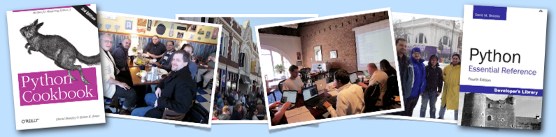
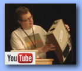
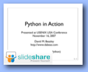
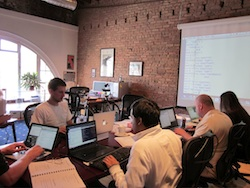

|
 |
|
Python Master Classes
|
|
|
|
|
|
And Now For Something Completely Better
Join Python book author and software
developer David Beazley for an
experience that will take your Python skills to a new level.
Forget every conception you might have
about a typical training course---these classes are held at Dave's
office in a round-table format that is strictly limited to 6
people. Thus, it's an opportunity to learn with someone who knows
Python inside-out and to interact with other enthusiastic programmers who are just as
excited about Python as you. Plus, there are other ammenities including close
proximity to all of the restaurants and cafes in Chicago's distinctive
Andersonville neighborhood. You won't be disappointed.
Recent Talks
[ What others say | Better? |
Why? ]
|
Dave Beazley Online


|
Dave is a frequent conference presenter and tutorial
instructor. Find videos and slides above. Follow him on Twitter at
@dabeaz.
You can find out more about Dave in this
podcast interview (Podcast.__init__).
Features supercomputers, Minecraft, kids, and more!
|
|
|
|
|
|
Current Course Schedule
|
|
Write a Compiler (In Python)
[5 days] The ultimate project course for serious
programmers who want to challenge their skills against the task
of writing a compiler in only 5 days. If you never got to
take a compilers course in school or if you simply want to know
how magical things like PyPy or Numba work under the covers, then this is the course
for you. Covers just about everything that would be covered
in an introductory level university compilers course including regular expressions, lexing,
parsers and parser generators, abstract syntax trees, type
systems, control flow graphs, code generation, and simple
optimization. A major aspect of this course concerns the software
engineering, design, and testing issues of writing a compiler.
More than 90% of the time is spend coding.
January 30, 2017: I have decided to postpone this course to a date
that's later in the year. If you are interested, click on the "Register"
link and add yourself to the waitlist to receive a notification on the new date.
[ More Information
| Register ]
|
|
Target Audience:
This course assumes full proficiency with the Python
language as well as knowledge of common data structures
and algorithms as might be taught in an undergraduate
algorithms course. Prior experience with regular
expressions, simple text parsing, and object oriented
programming is strongly advised.
Dates: March 20-24, 2017
Price: $2000
|
|
|
|
Advanced Python Mastery
[4.5 days] So you learned Python from an online tutorial, a
training course, or from a book, but you want to learn more. Then
this is the course for you. Designed for working programmers who
want to take their understanding to a whole new level, you'll
learn what really makes Python tick. The course starts out by
looking at subtle aspects of the Python code you are already writing, but then
dives into a wide variety of advanced topics
including the object model, data encapsulation, descriptors,
generators, coroutines, context managers, decorators, metaclasses,
packages, closures, and more. By the end of the course, you'll not
only know what these features are, but how they can be applied to
a wide range practical programming problems.
Includes a 325 page guidebook and more than 50
hands on exercises.
[ More Information
|
Register
| On-site
| Next Offering
]
|
|
Target Audience:
This class assumes that you already know the basics of writing
simple Python programs and that you are generally familiar with
Python's core features (functions, classes, modules, common
library modules, etc.).
Dates: April 3-7, 2017.
Price: $2750
|
|
|
|
Practical Python Programming
[4.5 days] This course, designed for software
developers, scientists, and engineers, is an intense introduction
to the Python programming language and standard library. A major
focus of the course is on using Python to process and manipulate data
from various kinds of files and web services. Major topics include mastery of Python's core
data types (tuples, lists, sets, dicts, etc.), import library modules,
and use of third-party extensions such as numpy and matplotlib.
Includes a 300 page guidebook and more than 50 hands-on
exercises.
[ More Information
| Register
| On-site
| Next Offering
]
|
|
Target Audience:
This class assumes that you already know how to write simple programs in
another programming language such as C, C++, Java, Perl, Ruby, PHP,
etc. A background in object-oriented programming is
useful, but not required.
Dates: April 24-28, 2017.
Price: $2750
|
|
|
|
|
|
About The Instructor
Classes are taught by David Beazley, author of the
Python
Essential Reference, 4th Edition (Addison Wesley) and Python Cookbook, 3rd Edition (O'Reilly Media). David has been actively involved with the Python
community since 1996 and is the guilty party responsible for
Swig, a compiler for integrating
Python with C/C++. From 1990-1997, he worked at Los Alamos National
Laboratory where he was one of the early pioneers of using Python with scientific software.
From 1998-2005, he was an assistant professor
in the Department of Computer Science at the University of Chicago
where he taught courses in operating systems, networks, and compilers.
Dave has previously taught tutorials at PyCON, OSCON, USENIX
LISA, and the USENIX Technical Conference. He currently
operates Dabeaz LLC, a company
that specializes in Python training and software development.
|
|
|
|
What Are Classes Like?
All classes are strictly limited to 6 students--a size that
makes it easier to interact with others and have meaningful discussions.
Typically, everyone meets for breakfast and coffee around
9:00am. The course then runs from 9:30am-5:30pm with lunch and an afternoon
coffee break. In most courses, more than half of the time is spent
programming and using Python. Come ready to code.
Although you can certainly learn Python from a book or online tutorial, a class gives you a unique
opportunity to meet other programmers, make connections with the larger
Python community, find out about bleeding-edge topics, and to walk
away with all sorts of new ideas.
All courses are conducted according to the Python Community Code of
Conduct.
|
|
|
|
About The Venue
|

|
|
Classes are held at Dave's office, located on the second floor of the
historic Calo Theater building in the heart of Chicago's diverse
Andersonville neighborhood.
Located 8 miles north of downtown, Andersonville is filled with quality independent
restaurants, cafes, bakeries, pubs, and boutiques. It's also the
perfect place to attend a class and to relax afterwards. You
will find the setting to be quite different than what you normally find at
work, a conference, or a corporate training center.
Classroom facilities include a 10-ft conference table, mesh office
chairs, a large projection screen, wireless internet, a copy/fax
machine, a Curta, and a Superboard II. Want to look something
up in a book? There is a technical library of several hundred
programming titles including most of the major Python books in
publication. Need to relax after the Spanish Inquisition? Chill out in
the comfy chair.
|
|
|
|
|
What's Included
- Breakfast and lunch at local restaurants
- Breaks at a local cafe
- A bound and fully indexed copy of all lecture notes
- Internet access and power
|
What You Need to Bring
All you need to bring is yourself and a laptop computer. All classes
involve a signficant amount of coding, so bring a computer that you
use regularly. Almost all course material is cross platform and works
equally well on Windows, Mac OS X, and Linux.
|
|
|
|
More Information
For more information and general inquiries, please send email to "dave" at "dabeaz.com".
You can also consult the Frequently Asked Questions.
|
|
|
|
Copyright (C) 2009-2017, Dabeaz LLC. All Rights Reserved.
|